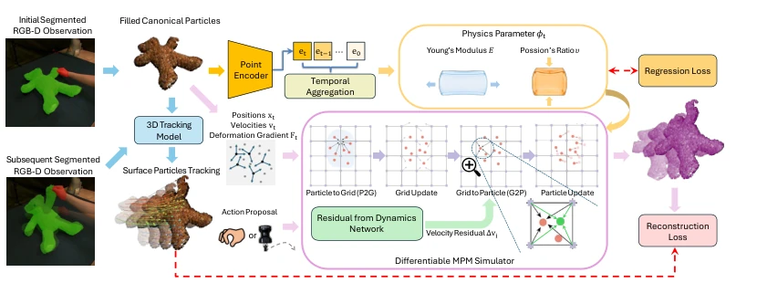
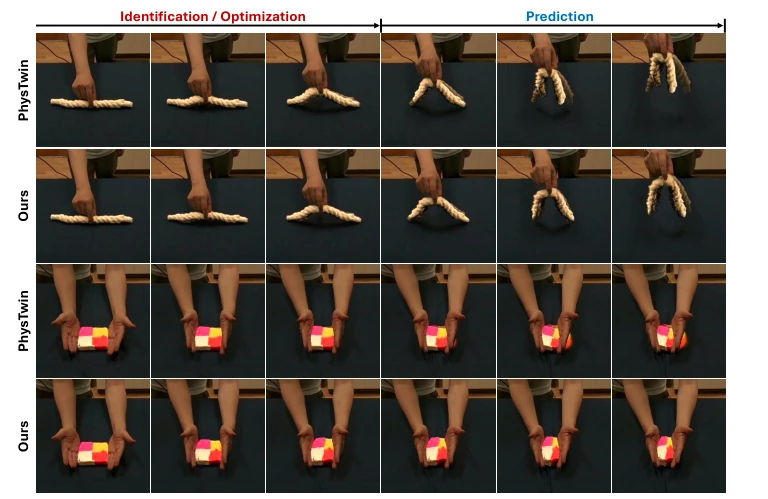
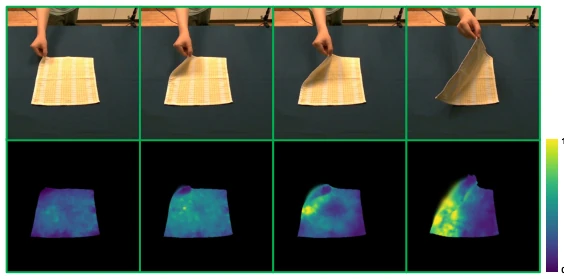
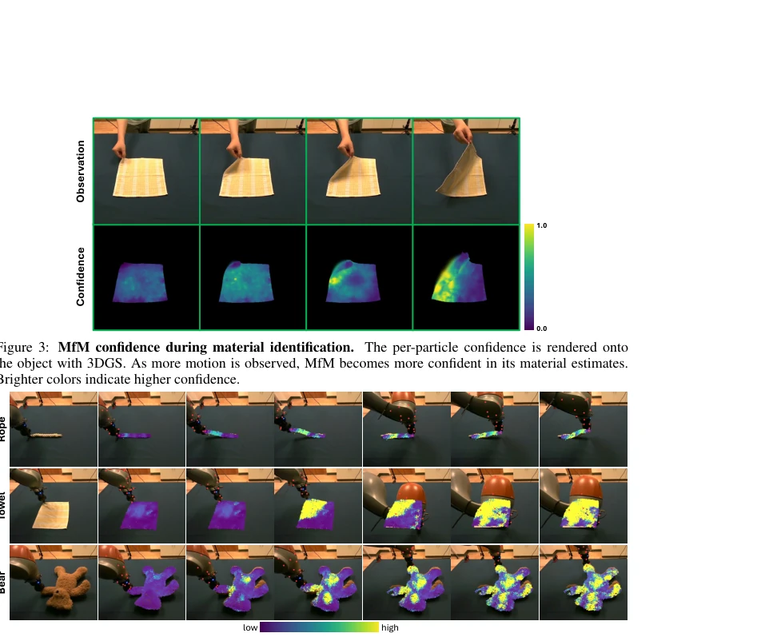

PhysCoRe attempts to address the challenge of deformable object dynamics prediction using a hybrid architecture of "physics + learning". It avoids the detour of purely data-driven methods and does not fall into the quagmire of traditional physics optimization; instead, it employs differentiable MPM [1] as the backbone, supplemented by two neural network modules as "patches". MfM is responsible for inferring materials from vision, while RfD is responsible for correcting simulator errors. This approach is quite stable, preserving physical structure while improving accuracy and speed. However, the authors honestly admit that currently it only supports elastic/elastic-plastic materials; it fails when encountering tearing, fluids, or complex contacts, and material behavior is predefined, so generalization is actually limited. Overall, it is a very practical engineering solution, but do not expect it to become a universal physics engine.
When robots manipulate deformable objects, they must predict object deformation, but this is difficult because material properties (such as stiffness) are invisible and vary across objects. Existing methods either rely on slow per-object optimization like PhysTwin [2] with poor generalization, or are purely data-driven like PGND [5], prone to violating physical laws. No method can balance speed, physical consistency, and generalization simultaneously. PhysCoRe aims to combine both, using MPM [1] to ensure physical plausibility, and using neural networks to bridge unknown materials and the sim-to-real gap, achieving fast online identification and prediction.
方法Method
整体框架基于可微 MPM 模拟器 [1]。输入 RGB-D 观测和动作后，先经 MfM 模块，利用 Fourier features 编码和图 U-Net 从观测中推断每个粒子的材料参数（杨氏模量、泊松比）及置信度。接着，材料参数驱动 MPM 进行动力学推演。在网格更新后、粒子更新前，RfD 模块介入，基于局部网格状态和 MfM 输出，通过 FiLM 条件的 3D U-Net 预测速度残差，修正网格速度以吸收 sim-to-real 误差。RfD 输出经 tanh 限制幅度，防止不稳定。训练分两阶段：MfM 先在仿真数据预训练，RfD 在真实数据微调。置信度还能用于指导主动探索。
The overall framework is based on a differentiable MPM simulator [1]. Given RGB-D observations and actions, the data first passes through the MfM module, which utilizes Fourier feature encoding and a Graph U-Net to infer material parameters (Young's modulus, Poisson's ratio) and confidence for each particle from the observations. Next, the material parameters drive the MPM for dynamic inference. After mesh update but before particle update, the RfD module intervenes; based on local mesh state and MfM output, it predicts velocity residuals via a FiLM-conditioned 3D U-Net to correct mesh velocities and absorb sim-to-real errors. RfD output is amplitude-limited by tanh to prevent instability. Training is divided into two stages: MfM is pre-trained on simulation data first, and RfD is fine-tuned on real data. Confidence can also be used to guide active exploration.

Figure 1: Overview of PhysCoRe. From segmented RGB-D observations, MfM infers the object’s per-particle material. A differentiable MPM simulator then rolls out the action-conditioned dynamics, with RfD injecting a velocity residual ∆vi to correct the grid velocity. The two modules are supervised by a material regression loss and a reconstruction loss respectively against the observations.
Evaluated on 12 real manipulation sequences (elastic/elastic-plastic objects), including objects such as ropes, towels, dolls, and playdough. Compared with PhysTwin [2], PGND [5], and EMPM [6]. PhysCoRe performs best on metrics such as Chamfer Distance, reducing CD for elastic objects by 43.7%. Material identification takes only 11.4 seconds, far faster than PhysTwin's 930 seconds. Ablation studies show that RfD significantly corrects residuals such as friction. Confidence maps show that high-confidence areas correspond to deformation areas, capable of guiding robots to explore unknown regions, validating the effectiveness of confidence.

Figure 2: Qualitative rollout comparison. Predicted object positions are rendered with 3DGS. Compared with PhysTwin, PhysCoRe predicts future dynamics that more closely match the real observations.

Figure 3: MfM confidence during material identification. The per-particle confidence is rendered onto the object with 3DGS. As more motion is observed, MfM becomes more confident in its material estimates. Brighter colors indicate higher confidence.

Figure 4: Confidence-guided exploration on a real robot. As a KUKA arm probes each object, MfM confi- dence starts low everywhere and rises only in regions the arm has actively deformed. It stays low elsewhere, so the map indicates where further interaction is most informative. Brighter colors indicate higher confidence.